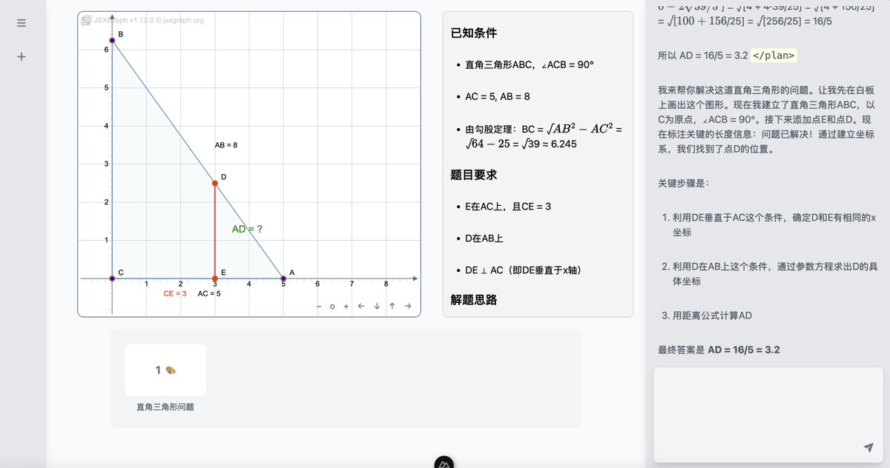
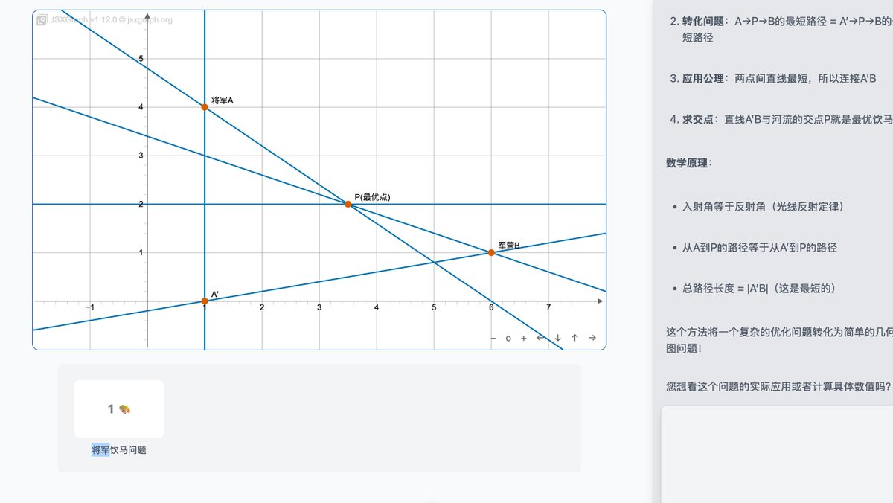
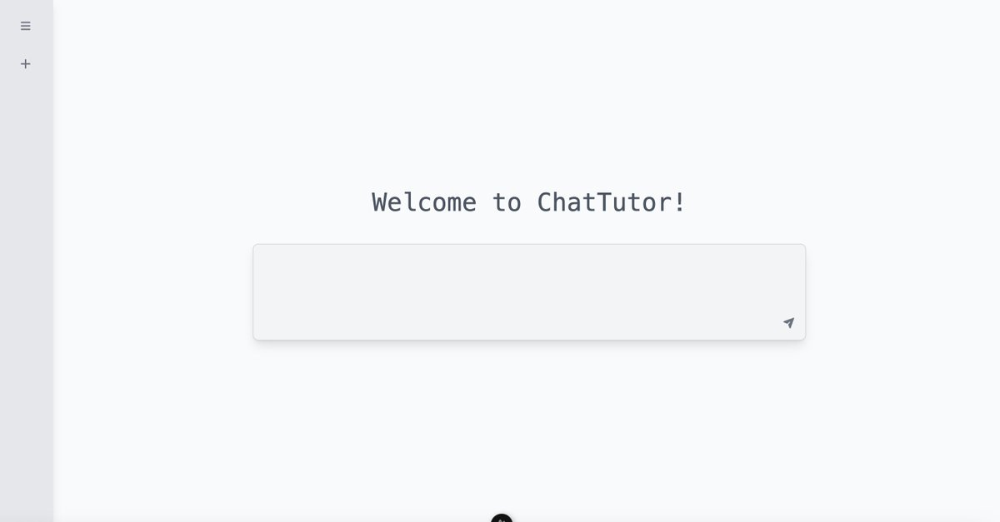
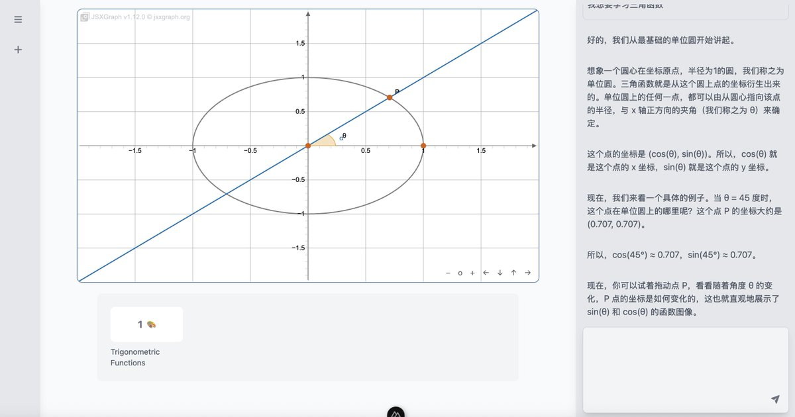

👾Iris-de-lux
@theforeveriris
@AcboxLiu 物理画板和逻辑电路画板基本可以放弃了....实现起来的难度比前面所有功能加在一起都要大。




📦Acbox
@AcboxLiu
介绍一下我的新项目——ChatTutor。这是一个突破性的「可视化交互式 AI 教师」，不仅能够通过文字与你对话，更能使用电子白板进行直观教学
与传统聊天机器人不同，ChatTutor 将真实课堂中的教学工具——黑板、几何绘图、函数图像、思维导图等——全部带到了数字世界。AI 真正拥有了"动手教学"的能力，让学习 https://t.co/xDwEAJvO9Q